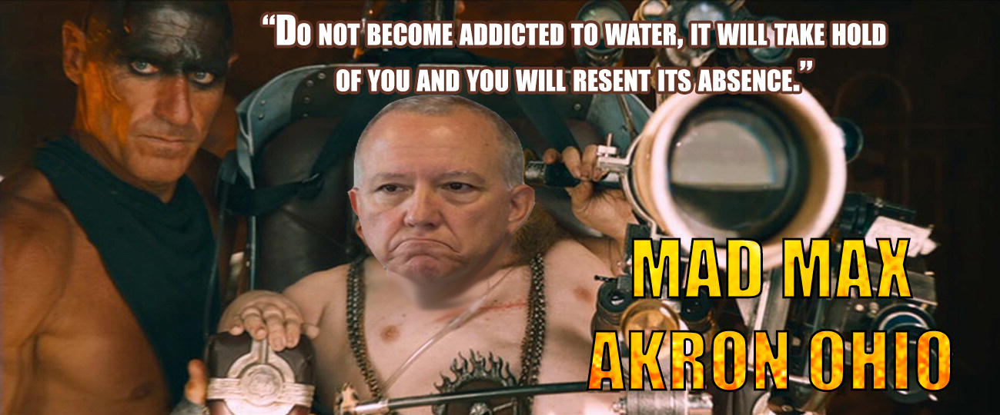

Timeline photos
Dear @[100064805494040:2048:City of Akron, Ohio - Mayor's Office] (Dan-the-man)
When your Ward 8 residents (the richest and most voting Ward) have to boil their water for days AND worry about lead leaching into our water (that no amount of boiling will fix) you really have to ask yourself what the hell you are doing over there in City Hall.
AND you are a "Democrat" that supports fracking near our water supply.
Even if the only thing you care about are Corporations you have to at least pretend to give a shit about the people who hold your precious kingship in their hands.